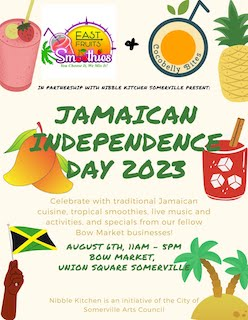
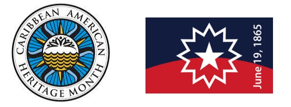

2023 Calendar of Events
Month of August 2023

Come visit us in Somerville
| Date | Description |
|---|---|
| Sun 8/6 | Nibble Kitchen’s Jamaican Independence Day Celebration within Bow Market |
| Sat 8/19 | Somerville Farmer’s Market in Union Square |
- Sunday 8/6: Pop-up at Nibble Kitchen’s Jamaican Independence Day Celebration
Have you been wanting to eat a hot patty on the spot? Well this is the time to come visit us along with the other Bow Market businesses as we celebrate with traditional Jamaican cusine and drinks. Plus there will be activities and a DJ spinning tunes.
- Saturday 8/19: Somerville Farmer’s Market in Union Square
Catch us under the Nibble Kitchen tent with our take-home frozen patties and cool refresing cups of our sorrel and ginger drinks.
Month of July 2023
Come visit us in Somerville
| Date | Description |
|---|---|
| Mon 7/3 | Nibble Kitchen Pop-up within Bow Market |
| Sat 7/8 | Somerville Farmer’s Market in Union Square |
| Sat 7/22 | Somerville Farmer’s Market in Union Square |
- Monday 7/3: Pop-up in Nibble Kitchen
Have you been wanting to eat a hot patty on the spot? Well this pop-up is just what you need, so come visit us!
- Saturday 7/8 and 7/22: Somerville Farmer’s Market in Union Square
Catch us under the Nibble Kitchen tent with our take-home frozen patties and cool refresing cups of our sorrel and ginger drinks.
Month of June 2023

Come find us in Somerville as we celebrate Caribbean-American Heritage month and Juneteenth!
| Date | Description |
|---|---|
| All of June | Caribbean-American Heritage Month |
| Mon 6/19 | Juneteenth |
| Sat 6/24 | Somerville Farmer’s Market in Union Square |
- June is Caribbean-American Heritage Month
We celebrate the achievements and dreams of the millions of people of Caribbean origin now living in the United States while honoring the shared history of joy and perseverance that has united and enriched life across our region for centuries. (retrieved from Caribbean American Heritage Month )
- Monday 6/19: Juneteenth
The historical legacy of Juneteenth shows the value of never giving up hope in uncertain times. A Proclamation on Juneteenth Day of Observance, 2023 )
- Saturday 6/24: Somerville Farmer’s Market in Union Square
We’ll be under the Nibble Kitchen tent with our take-home frozen patties and cool refresing cups of our sorrel drink.